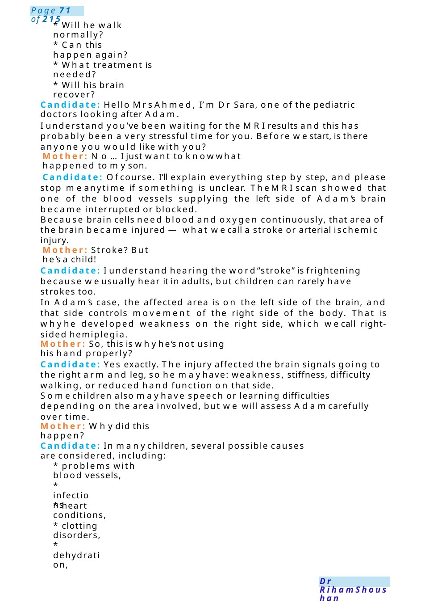
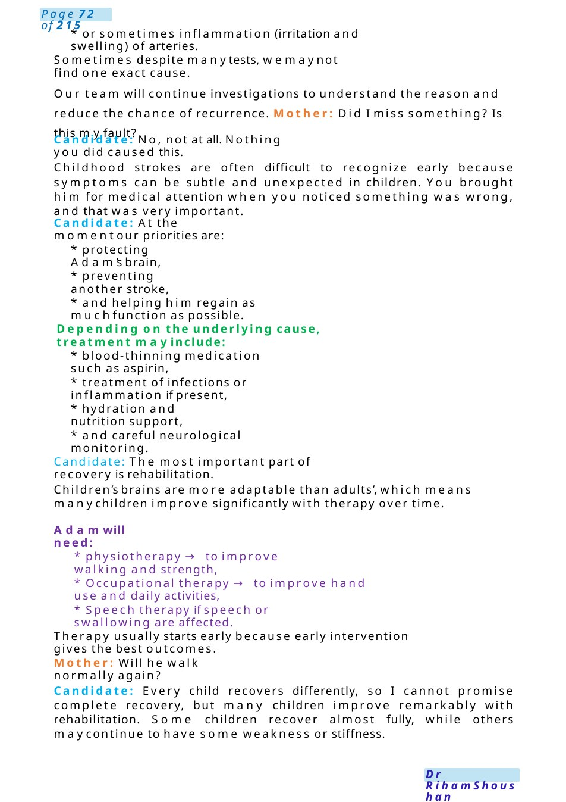
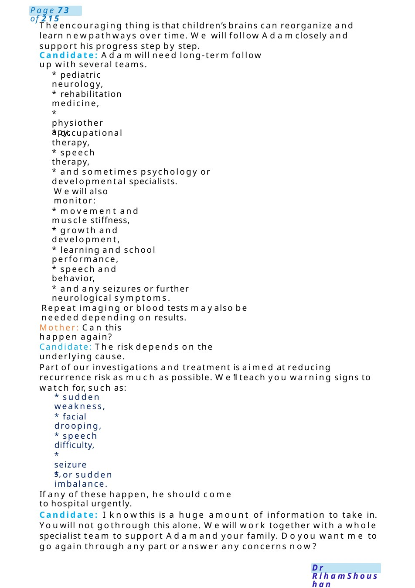

Hemiplegia
Talking to Mother of a Child with Right-Sided Hemiplegia due to Left-Sided Arterial Interruption on MRI Candidate Instructions: You are the paediatric trainee in clinic. Mother of 2-year-old Adam came today after MRIbrain results. Adamdeveloped weakness with fisting of the right side of the body. MRIshowed interruption/blockage of arteries on the left side of the brain causing stroke injury.
Scenario Summary
Talking to Mother of a Child with Right-Sided Hemiplegia due to Left-Sided Arterial Interruption on MRI Candidate Instructions: You are the paediatric trainee in clinic. Mother of 2-year-old Adam came today after MRIbrain results. Adamdeveloped weakness with fisting of the right side of the body. MRIshowed interruption/blockage of arteries on the left side of the brain causing stroke injury.
Full Original Scenario

Hemiplegia
Talking to Mother of a Child with Right-Sided Hemiplegia due to Left-Sided Arterial Interruption on MRI
Candidate Instructions: You are the paediatric trainee in clinic. Mother of 2-year-old Adam came today after MRIbrain results. Adamdeveloped weakness with fisting of the right side of the body. MRIshowed interruption/blockage of arteries on the left side of the brain causing stroke injury.
Yourtask:
- Explain the MRIfindings in simple language
- Explain the cause of right-sided weakness
- Discuss immediate management plan
- Discuss rehabilitation and long-term follow up
- Explain multidisciplinary team involvement
- Address mother’s concerns empathetically
Role Player Brief (Mother)
- Very anxious and scared
- Thinks child maybecome permanently disabled
- Feels guilty she missed symptoms
- Wants to know:
- What caused this?

- Will he walk normally?
- Can this happen again?
- What treatment is needed?
- Will his brain recover?
Candidate: Hello Mrs Ahmed, I’m Dr Sara, one of the pediatric doctors looking after Adam.
I understand you’ve been waiting for the MRIresults and this has probably been a very stressful time for you. Before westart, is there anyone you would like with you?
Mother: No...I just want to knowwhat happened to myson.
Candidate: Ofcourse. I’ll explain everything step by step, and please stop meanytime if something is unclear. TheMRIscan showed that one of the blood vessels supplying the left side of Adam’s brain became interrupted or blocked.
Because brain cells need blood and oxygen continuously, that area of the brain became injured —what wecall a stroke or arterial ischemic injury.
Mother: Stroke? But he’s a child!
Candidate: I understand hearing the word“stroke” is frightening because weusually hear it in adults, but children can rarely have strokes too.
In Adam’s case, the affected area is on the left side of the brain, and that side controls movement of the right side of the body. That is whyhe developed weakness on the right side, which wecall right- sided hemiplegia.
Mother: So, this is whyhe’s not using his hand properly?
Candidate: Yes exactly. The injury affected the brain signals going to the right arm and leg, so he mayhave: weakness, stiffness, difficulty walking, or reduced hand function on that side.
Somechildren also mayhave speech or learning difficulties depending on the area involved, but we will assess Adamcarefully over time.
Mother: Whydid this happen?
Candidate: In manychildren, several possible causes are considered, including:
- problems with blood vessels,
- infections
- heart conditions,
- clotting disorders,
- dehydration,

- or sometimes inflammation (irritation and swelling) of arteries.
Sometimes despite manytests, wemaynot find one exact cause.
Our team will continue investigations to understand the reason and reduce the chance of recurrence. Mother: Did I miss something? Is this myfault?
Candidate: No, not at all. Nothing you did caused this.
Childhood strokes are often difficult to recognize early because symptoms can be subtle and unexpected in children. You brought him for medical attention when you noticed something was wrong, and that was very important.
Candidate: At the momentour priorities are:
- protecting Adam’s brain,
- preventing another stroke,
- and helping him regain as muchfunction as possible.
Depending on the underlying cause, treatment mayinclude:
- blood-thinning medication such as aspirin,
- treatment of infections or inflammation if present,
- hydration and nutrition support,
- and careful neurological monitoring.
Candidate: The most important part of recovery is rehabilitation.
Children’s brains are more adaptable than adults’, which means manychildren improve significantly with therapy over time.
Adamwill need:
- physiotherapy → to improve walking and strength,
- Occupational therapy → to improve hand use and daily activities,
- Speech therapy if speech or swallowing are affected.
Therapy usually starts early because early intervention gives the best outcomes.
Mother: Will he walk normally again?
Candidate: Every child recovers differently, so I cannot promise complete recovery, but many children improve remarkably with rehabilitation. Some children recover almost fully, while others maycontinue to have some weakness or stiffness.

Theencouraging thing is that children’s brains can reorganize and learn newpathways over time. We will follow Adamclosely and support his progress step by step.
Candidate: Adamwill need long-term follow up with several teams.
- pediatric neurology,
- rehabilitation medicine,
- physiotherapy,
- occupational therapy,
- speech therapy,
- and sometimes psychology or developmental specialists.
Wewill also monitor:
- movement and muscle stiffness,
- growth and development,
- learning and school performance,
- speech and behavior,
- and any seizures or further neurological symptoms.
Repeat imaging or blood tests mayalso be needed depending on results.
Mother: Can this happen again?
Candidate: The risk depends on the underlying cause.
Part of our investigations and treatment is aimed at reducing recurrence risk as much as possible. We’ll teach you warning signs to watch for, such as:
- sudden weakness,
- facial drooping,
- speech difficulty,
- seizures,
- or sudden imbalance.
If any of these happen, he should come to hospital urgently.
Candidate: I knowthis is a huge amount of information to take in. Youwill not gothrough this alone. Wewill work together with a whole specialist team to support Adamand your family. Doyou want me to go again through any part or answer any concerns now?

Talk to School Nurse About Child with Epilepsy
Key Points Examiner Looks For
- Empathy and clear explanation
- Explains stroke in simple language
- Explains contralateral weakness
- Discusses causes broadly
- Reassures mother appropriately
- Explains rehabilitation importance
- Mentions MDT:
- Neurology
- Physiotherapy
- OT
- Speech therapy
- Rehabilitation team
- Psychology/developmental team
- Discusses recurrence and follow-up
- Goodsafety netting
▪ Noattendance because you took permission for her only from parents.
▪ Makethe circumstances safe for him (DO&DONOT).
▪ Put him in a recovery position with explaining it to her.
▪ Tell her about buccal midazolam after 5 minutes and then call ambulance.
▪ Navalproate (Epilim) is an oral medication and cannot be given during attack.
▪ Not all seizures can be predicted, some occur without prodroma.
▪ Avoid triggers, wemust revise her file it maybe (flash of light, hunger, lack of sleep).
▪ Other kids (you can arrange another member of your team to take them in another room) and talk to them that we are different, Counsell them how to help him &if you saw him in fits again, shout for help.
▪ Another nurse cannot attend because she did not get permission from the parents.
▪ Modifications to be done at school &we cannot restrict her from practicing sports.
▪ Advice to parents regarding stuck to follow up &take medications regularly &wear bracelet.